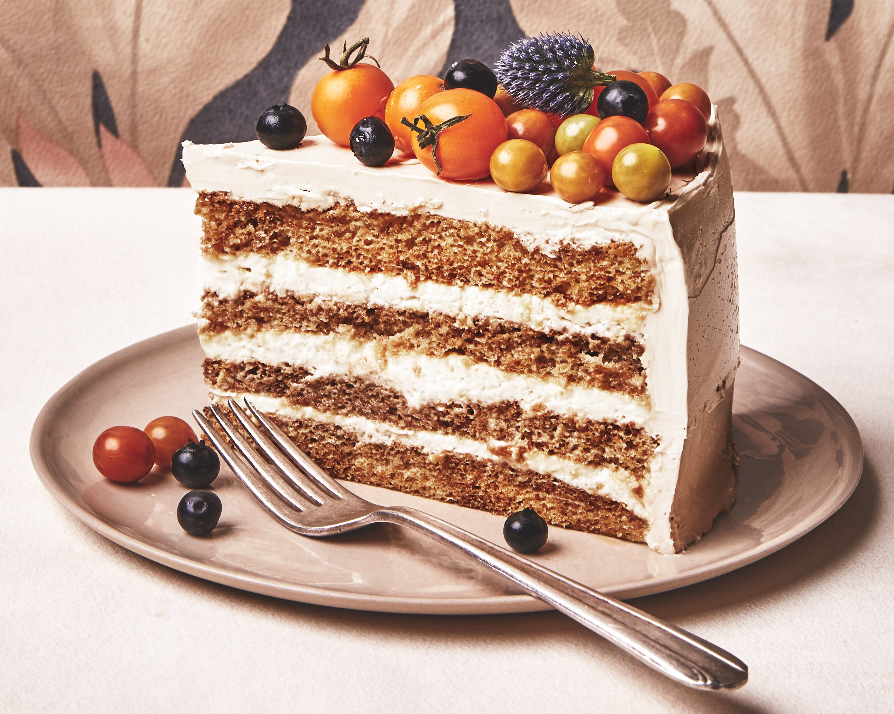

| [LAYER CAKE] | Home | Cake's history | Gallery | Contact Us |
|---|
| Cake's History |
|---|
| 
케이크의 기원은 신석기 시대에서 거슬러 올라간다. 최초의 케이크는 지금 우리가 알고있는 것과는 매우 달랐다. 그것은 밀가루에 꿀을 첨가해 단맛을 뺀, 빵에 가까운 음식이었고, 때로는 견과류나 말린 과일이 들어가기도 했다. 이것이 바로 케이크의 시조라 할만한 음식으로 알려져 있다. 이후 케이크는 이집트에서 빵 굽는 기술이 등장하면서 발전하기 시작했다. B.C 2000년경 이집트 인들은 이미 이스트를 이용한 케이크를 만들기 시작했으며, 때문에 당시의 사람들은 이집트인들을 '빵을 먹는 사람'이라고 표현했다고 한다. 당시의 회화나 조각작품들을 보면 밀가루로 빵 반죽하고 있는 모습을 종종 볼 수 있다. 이러한 이집트의 빵 중심의 식문화는 그리스 로마로 전해져 케이크의 발전에 기여하게 된다. 그리스에서는 케이크의 종류가 100여종에 달했으며 로마에서는 케이크가 빵으로부터 완전히 독립돼 빵 만드는 사람과 케이크를 만드는 사람이 구분되어 각각의 전문점과 직업 조합을 가지게 되었다. 우리가 알고 있는, 둥글고 윗부분이 아이싱 처리된 현대 케이크의 선구자격인 케이크는 17세기 중반 유럽에서 처음으로 구워지기 시작했다. 이것은 오분과 음식틀의 발전과 같은 기술발전, 그리고 정제된 설탕 등의 재료 수급이 원활해진 덕분에 가능했다. 그때에는 케이크의 모양을 잡는 틀로 동그란 형태가 많이 쓰였으며, 이것이 현재까지 일반적인 케이크의 모양으로 굳어지게 되었다. 이때 케이크 윗부분 모양으 ㄹ내고자 하는 목적으로 설탕과 계란 흰자, 때때로 향료를 끓인 혼합물을 사용해 케이크 윗부분에 붓는 관습이 생겼는데, 이러한 재료들은 케이크 위에 부어져 오븐 속에서 다시 구워진 후에 딱딱하고 투명한 얼음처럼 변했기 때문에 이를 '아이싱'이라 부르게 되었다. 19세기 와서야 이스트 대신 베이킹 파우더와 정제된 하얀 밀가루를 넣은, 우리가 알고 있는 현대적 케이크가 만들어지기 시작했다. |